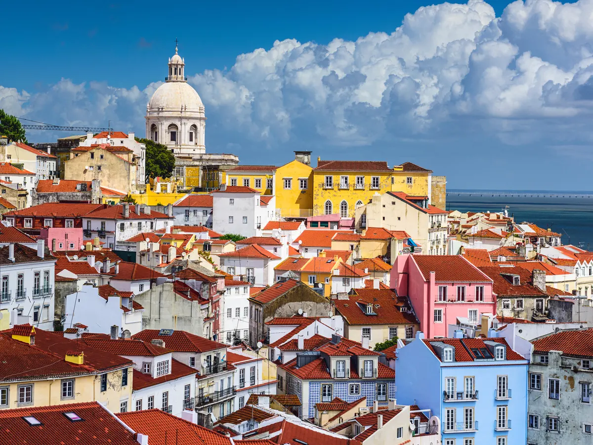

Prima zi a vacantei am dedicat-o in exclusivitate orasului pentru a face cunostinta cu acesta si a ma familiariza cu principalele sale atractii turistice pe care acum le vedeam pe viu.
Am avut norocul sa de a fi cazat in Bairro Alto, in vecinatatea Miradouro de Sao Pedro de Alcantara, care mi-a oferit o prima vedere panoramica asupra Lisabonei. Cu harta in mana, am inceput sa explorez orasul, luand-o spre Igreja de Sao Roque, apoi spre Praca de Luis de Camoes, pe urma la Elevadorul de Santa Justa, dupa ce am fost in Largo do Carmo, langa Convento do Carmo, o vestita biserica gotica in ruine, fara acoperis, distrusa de marele cutremur din 1755, acum muzeu.
Ascensorul Santa Justa m-a coborat in Baixa, dar nu inainte sa ma bucur de alta imagine de sus asupra Lisabonei, din cel mai inalt palier al constructiei de metal. Apoi, aveam in gand sa parcurg la pas Rua Augusta, ce ma ducea la malul fluviului, in splendida Praca do Comercio, unul dintre simbolurile capitalei portugheze.
A doua zi planuiseram s-o petrec in Belem unde aveam ce vizita: Turnul Belem, Mosteiro dos Jeronimos, Monumentul Descoperirilor. A urmat vizita la Muzeul Trasurilor si la bizareria stiuta drept LX Factory. Pana sa se insereze, m-am intors pe strazile din Baixa.
A treia zi de dimineata am plecat la Sintra. Dupa ce m-am intors in gara din Sintra, am luat un autobuz spre Parques de Sintra, pentru a vizita Palatul Pena si Castelul Maurilor, apoi am revenit in Lisabona.
Cea de-a patra zi si ultima, m-am bucurat mai mult de atmosfera Lisabonei.
Mai intai am mai facut un tur prin Bairro Alto, admirand numeroasele graffiti de pe multe cladiri, apoi m-am deplasat spre Praca de Luis de Camoes, apoi spre Muzeul Farmaciei si Igreja de Santa Catarina alaturi de care se gaseste un alt miradouro, am urcat si coborat cu Elevador da Bica.
Apoi am vrut neaparat sa ma plimb cu faimosul tramvai galben (28E) , pe buna parte din traseul sau din centrul istoric, admirand din mers cladirile, strazile, trecatorii de la fereastra fara geamuri a tramvaiului de epoca.
Am mers pe urma pe stradutele Alfamei, am surprins privelisti ce-ti taie rasuflarea din punctele de belvedere din zona, apoi am mers in pietele mari din zona zero: Praca Dom Pedro IV, Praca da Figueira, Praca Sao Domingos.
Lisabona a fost minunata!